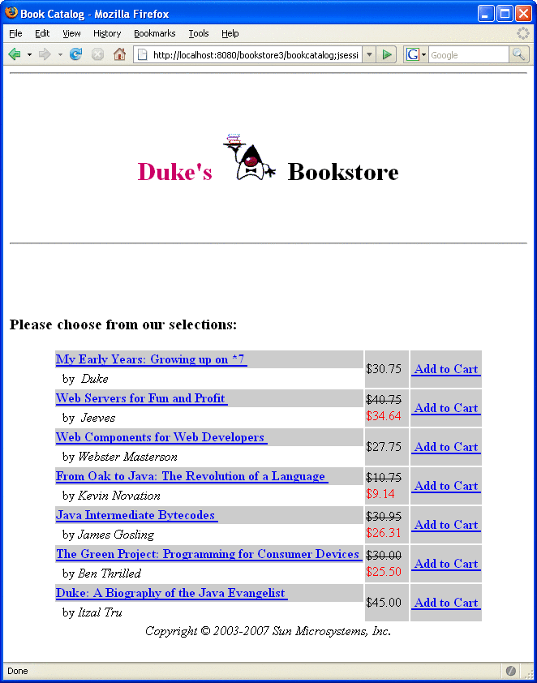

Encapsulating Reusable Content Using Tag Files
A tag file is a source file that contains a fragment of JSP code that is reusable as a custom tag. Tag files allow you to create custom tags using JSP syntax. Just as a JSP page gets translated into a servlet class and then compiled, a tag file gets translated into a tag handler and then compiled.
The recommended file extension for a tag file is .tag. As is the case with JSP files, the tag can be composed of a top file that includes other files that contain either a complete tag or a fragment of a tag file. Just as the recommended extension for a fragment of a JSP file is .jspf, the recommended extension for a fragment of a tag file is .tagf.
The following version of the Hello, World application introduced in Chapter 3, Getting Started with Web Applications uses a tag to generate the response. The response tag, which accepts two attributes (a greeting string and a name) is encapsulated in response.tag:
<%@ attribute name="greeting" required="true" %>
<%@ attribute name="name" required="true" %>
<h2><font color="black">${greeting}, ${name}!</font></h2>The highlighted line in the greeting.jsp page invokes the response tag if the length of the username request parameter is greater than 0:
<%@ taglib tagdir="/WEB-INF/tags" prefix="h" %>
<%@ taglib uri="http://java.sun.com/jsp/jstl/core"
prefix="c" %>
<%@ taglib uri="http://java.sun.com/jsp/jstl/functions"
prefix="fn" %>
<html>
<head><title>Hello</title></head>
<body bgcolor="white">
<img src="duke.waving.gif">
<c:set var="greeting" value="Hello" />
<h2>${greeting}, my name is Duke. What’s yours?</h2>
<form method="get">
<input type="text" name="username" size="25">
<p></p>
<input type="submit" value="Submit">
<input type="reset" value="Reset">
</form>
<c:if test="${fn:length(param.username) > 0}" >
<h:response greeting="${greeting}" name="${param.username}"/></c:if>
</body>
</html>To deploy and run the hello3 application with NetBeans IDE, follow these steps:
In NetBeans IDE, select File→Open Project.
In the Open Project dialog, navigate to:
tut-install/javaeetutorial5/examples/web/
Select the hello3 folder.
Select the Open as Main Project check box.
Click Open Project.
In the Projects tab, right-click the hello3 project, and select Undeploy and Deploy.
To run the application, open the bookstore URL http://localhost:8080/hello3.
To deploy and run the hello3 application with Ant, follow these steps:
In a terminal window, go to tut-install/javaeetutorial5/examples/web/hello3/.
Type ant. This target will spawn any necessary compilations, copy files to the tut-install/javaeetutorial5/examples/web/hello3/build/ directory, and create a WAR file.
Start the Application Server.
To deploy the example, type ant deploy.
To run the example, open your browser to http://localhost:8080/hello3.
To learn how to configure the example, refer to the deployment descriptor (the web.xml file), which includes the following configurations:
A display-name element that specifies the name that tools use to identify the application.
A welcome-file-list element that sets a particular page to be a welcome file.
Tag File Location
Tag files can be placed in one of two locations: in the /WEB-INF/tags/ directory or subdirectory of a web application or in a JAR file (see Packaged Tag Files) in the /WEB-INF/lib/ directory of a web application. Packaged tag files require a tag library descriptor (see Tag Library Descriptors), an XML document that contains information about a library as a whole and about each tag contained in the library. Tag files that appear in any other location are not considered tag extensions and are ignored by the web container.
Tag File Directives
Directives are used to control aspects of tag file translation to a tag handler, and to specify aspects of the tag, attributes of the tag, and variables exposed by the tag. Table 8-1 lists the directives that you can use in tag files.
Table 8-1 Tag File Directives
Directive |
Description |
|---|---|
taglib |
Identical to taglib directive (see Declaring Tag Libraries) for JSP pages. |
include |
Identical to include directive (see Reusing Content in JSP Pages) for JSP pages. Note that if the included file contains syntax unsuitable for tag files, a translation error will occur. |
tag |
Similar to the page directive in a JSP page, but applies to tag files instead of JSP pages. As with the page directive, a translation unit can contain more than one instance of the tag directive. All the attributes apply to the complete translation unit. However, there can be only one occurrence of any attribute or value defined by this directive in a given translation unit. With the exception of the import attribute, multiple attribute or value (re)definitions result in a translation error. Also used for declaring custom tag properties such as display name. See Declaring Tags. |
attribute |
Declares an attribute of the custom tag defined in the tag file. See Declaring Tag Attributes in Tag Files. |
variable |
Declares an EL variable exposed by the tag to the calling page. See Declaring Tag Variables in Tag Files. |
Declaring Tags
The tag directive is similar to the JSP page’s page directive but applies to tag files. Some of the elements in the tag directive appear in the tag element of a TLD (see Declaring Tag Handlers). Table 8-2 lists the tag directive attributes.
Table 8-2 tag Directive Attributes
Attribute |
Description |
|---|---|
display-name |
(optional) A short name that is intended to be displayed by tools. Defaults to the name of the tag file without the extension .tag. |
body-content |
(optional) Provides information on the content of the body of the tag. Can be either empty, tagdependent, or scriptless. A translation error will result if JSP or any other value is used. Defaults to scriptless. See body-content Attribute. |
dynamic-attributes |
(optional) Indicates whether this tag supports additional attributes with dynamic names. The value identifies a scoped attribute in which to place a Map containing the names and values of the dynamic attributes passed during invocation of the tag. A translation error results if the value of the dynamic-attributes of a tag directive is equal to the value of a name-given of a variable directive or the value of a name attribute of an attribute directive. |
small-icon |
(optional) Relative path, from the tag source file, of an image file containing a small icon that can be used by tools. Defaults to no small icon. |
large-icon |
(optional) Relative path, from the tag source file, of an image file containing a large icon that can be used by tools. Defaults to no large icon. |
description |
(optional) Defines an arbitrary string that describes this tag. Defaults to no description. |
example |
(optional) Defines an arbitrary string that presents an informal description of an example of a use of this action. Defaults to no example. |
language |
(optional) Carries the same syntax and semantics of the language attribute of the page directive. |
import |
(optional) Carries the same syntax and semantics of the import attribute of the page directive. |
pageEncoding |
(optional) Carries the same syntax and semantics of the page-Encoding attribute in the page directive. |
isELIgnored |
(optional) Carries the same syntax and semantics of the isEL-Ignored attribute of the page directive. |
body-content Attribute
You specify the type of a tag’s body content using the body-content attribute:
bodycontent="empty | scriptless | tagdependent"
You must declare the body content of tags that do not accept a body as empty. For tags that have a body there are two options. Body content containing custom and standard tags and HTML text is specified as scriptless. All other types of body content (for example, SQL statements passed to the query tag) is specified as tagdependent. If no attribute is specified, the default is scriptless.
Declaring Tag Attributes in Tag Files
To declare the attributes of a custom tag defined in a tag file, you use the attribute directive. A TLD has an analogous attribute element (see Declaring Tag Attributes for Tag Handlers). Table 8-3 lists the attribute directive attributes.
Table 8-3 attribute Directive Attributes
Declaring Tag Variables in Tag Files
Tag attributes are used to customize tag behavior much as parameters are used to customize the behavior of object methods. In fact, using tag attributes and EL variables, it is possible to emulate various types of parameters: IN, OUT, and nested.
To emulate IN parameters, use tag attributes. A tag attribute is communicated between the calling page and the tag file when the tag is invoked. No further communication occurs between the calling page and the tag file.
To emulate OUT or nested parameters, use EL variables. The variable is not initialized by the calling page but instead is set by the tag file. Each type of parameter is synchronized with the calling page at various points according to the scope of the variable. See Variable Synchronization for details.
To declare an EL variable exposed by a tag file, you use the variable directive. A TLD has an analogous variable element (see Declaring Tag Variables for Tag Handlers). Table 8-4 lists the variable directive attributes.
Table 8-4 variable Directive Attributes
Attribute |
Description |
|---|---|
description |
(optional) An optional description of this variable. Defaults to no description. |
name-given | name-from-attribute |
Defines an EL variable to be used in the page invoking this tag. Either name-given or name-from-attribute must be specified. If name-given is specified, the value is the name of the variable. If name-from-attribute is specified, the value is the name of an attribute whose (translation-time) value at the start of the tag invocation will give the name of the variable. Translation errors arise in the following circumstances: 1. Specifying neither name-given nor name-from-attribute or both. 2. If two variable directives have the same name-given. 3. If the value of a name-given attribute of a variable directive is equal to the value of a name attribute of an attribute directive or the value of a dynamic-attributes attribute of a tag directive. |
alias |
Defines a variable, local to the tag file, to hold the value of the EL variable. The container will synchronize this value with the variable whose name is given in name-from-attribute. Required when name-from-attribute is specified. A translation error results if used without name-from-attribute. A translation error results if the value of alias is the same as the value of a name attribute of an attribute directive or the name-given attribute of a variable directive. |
variable-class |
(optional) The name of the class of the variable. The default is java.lang.String. |
declare |
(optional) Whether or not the variable is declared. True is the default. |
scope |
(optional) The scope of the variable. Can be either AT_BEGIN, AT_END, or NESTED. Defaults to NESTED. |
Variable Synchronization
The web container handles the synchronization of variables between a tag file and a calling page. Table 8-5 summarizes when and how each object is synchronized according to the object’s scope.
Table 8-5 Variable Synchronization Behavior
Tag File Location |
AT_BEGIN |
NESTED |
AT_END |
|---|---|---|---|
Beginning |
Not sync. |
Save |
Not sync. |
Before any fragment invocation using jsp:invoke or jsp:doBody (see Evaluating Fragments Passed to Tag Files) |
Tag→page |
Tag→page |
Not sync. |
End |
Tag→page |
Restore |
Tag→page |
If name-given is used to specify the variable name, then the name of the variable in the calling page and the name of the variable in the tag file are the same and are equal to the value of name-given.
The name-from-attribute and alias attributes of the variable directive can be used to customize the name of the variable in the calling page while another name is used in the tag file. When using these attributes, you set the name of the variable in the calling page from the value of name-from-attribute at the time the tag was called. The name of the corresponding variable in the tag file is the value of alias.
Synchronization Examples
The following examples illustrate how variable synchronization works between a tag file and its calling page. All the example JSP pages and tag files reference the JSTL core tag library with the prefix c. The JSP pages reference a tag file located in /WEB-INF/tags with the prefix my.
- AT_BEGIN Scope
In this example, the AT_BEGIN scope is used to pass the value of the variable named x to the tag’s body and at the end of the tag invocation.
<%-- callingpage.jsp --%> <c:set var="x" value="1"/> ${x} <%-- (x == 1) --%> <my:example> ${x} <%-- (x == 2) --%> </my:example> ${x} <%-- (x == 4) --%> <%-- example.tag --%> <%@ variable name-given="x" scope="AT_BEGIN" %> ${x} <%-- (x == null) --%> <c:set var="x" value="2"/> <jsp:doBody/> ${x} <%-- (x == 2) --%> <c:set var="x" value="4"/>- NESTED Scope
In this example, the NESTED scope is used to make a variable named x available only to the tag’s body. The tag sets the variable to 2, and this value is passed to the calling page before the body is invoked. Because the scope is NESTED and because the calling page also had a variable named x, its original value, 1, is restored when the tag completes.
<%-- callingpage.jsp --%> <c:set var="x" value="1"/> ${x} <%-- (x == 1) --%> <my:example> ${x} <%-- (x == 2) --%> </my:example> ${x} <%-- (x == 1) --%> <%-- example.tag --%> <%@ variable name-given="x" scope="NESTED" %> ${x} <%-- (x == null) --%> <c:set var="x" value="2"/> <jsp:doBody/> ${x} <%-- (x == 2) --%> <c:set var="x" value="4"/>- AT_END Scope
In this example, the AT_END scope is used to return a value to the page. The body of the tag is not affected.
<%-- callingpage.jsp --%> <c:set var="x" value="1"/> ${x} <%-- (x == 1) --%> <my:example> ${x} <%-- (x == 1) --%> </my:example> ${x} <%-- (x == 4) --%> <%-- example.tag --%> <%@ variable name-given="x" scope="AT_END" %> ${x} <%-- (x == null) --%> <c:set var="x" value="2"/> <jsp:doBody/> ${x} <%-- (x == 2) --%> <c:set var="x" value="4"/>- AT_BEGIN and name-from-attribute
In this example the AT_BEGIN scope is used to pass an EL variable to the tag’s body and make to it available to the calling page at the end of the tag invocation. The name of the variable is specified by the value of the attribute var. The variable is referenced by a local name, result, in the tag file.
<%-- callingpage.jsp --%> <c:set var="x" value="1"/> ${x} <%-- (x == 1) --%> <my:example var="x"> ${x} <%-- (x == 2) --%> ${result} <%-- (result == null) --%> <c:set var="result" value="invisible"/> </my:example> ${x} <%-- (x == 4) --%> ${result} <%-- (result == ”invisible’) --%> <%-- example.tag --%> <%@ attribute name="var" required="true" rtexprvalue="false"%> <%@ variable alias="result" name-from-attribute="var" scope="AT_BEGIN" %> ${x} <%-- (x == null) --%> ${result} <%-- (result == null) --%> <c:set var="x" value="ignored"/> <c:set var="result" value="2"/> <jsp:doBody/> ${x} <%-- (x == ”ignored’) --%> ${result} <%-- (result == 2) --%> <c:set var="result" value="4"/>
Evaluating Fragments Passed to Tag Files
When a tag file is executed, the web container passes it two types of fragments: fragment attributes and the tag body. Recall from the discussion of fragment attributes that fragments are evaluated by the tag handler as opposed to the web container. Within a tag file, you use the jsp:invoke element to evaluate a fragment attribute and use the jsp:doBody element to evaluate a tag file body.
The result of evaluating either type of fragment is sent to the response or is stored in an EL variable for later manipulation. To store the result of evaluating a fragment to an EL variable, you specify the var or varReader attribute. If var is specified, the container stores the result in an EL variable of type String with the name specified by var. If varReader is specified, the container stores the result in an EL variable of type java.io.Reader, with the name specified by varReader. The Reader object can then be passed to a custom tag for further processing. A translation error occurs if both var and varReader are specified.
An optional scope attribute indicates the scope of the resulting variable. The possible values are page (default), request, session, or application. A translation error occurs if you use this attribute without specifying the var or varReader attribute.
Custom Tag Examples
This section introduces examples that demonstrate using custom tags.
Simple Attribute Example
The Duke’s Bookstore shipDate tag, defined in tut-install/javaeetutorial5/examples/web/bookstore3/web/WEB-INF/tags/shipDate.tag, is a custom tag that has a simple attribute. The tag generates the date of a book order according to the type of shipping requested.
<%@ taglib prefix="sc" tagdir="/WEB-INF/tags" %>
<h3><fmt:message key="ThankYou"/> ${param.cardname}.</h3><br>
<fmt:message key="With"/>
<em><fmt:message key="${param.shipping}"/></em>,
<fmt:message key="ShipDateLC"/>
<sc:shipDate shipping="${param.shipping}" />The tag determines the number of days until shipment from the shipping attribute passed to it by the page tut-install/javaeetutorial5/examples/web/bookstore3/web/bookreceipt.jsp. From the number of days, the tag computes the ship date. It then formats the ship date.
<%@ attribute name="shipping" required="true" %>
<jsp:useBean id="now" class="java.util.Date" />
<jsp:useBean id="shipDate" class="java.util.Date" />
<c:choose>
<c:when test="${shipping == ’QuickShip’}">
<c:set var="days" value="2" />
</c:when>
<c:when test="${shipping == ’NormalShip’}">
<c:set var="days" value="5" />
</c:when>
<c:when test="${shipping == ’SaverShip’}">
<c:set var="days" value="7" />
</c:when>
</c:choose>
<jsp:setProperty name="shipDate" property="time"
value="${now.time + 86400000 * days}" />
<fmt:formatDate value="${shipDate}" type="date"
dateStyle="full"/>.<br><br>
Simple and Fragment Attribute and Variable Example
The Duke’s Bookstore catalog tag, defined in tut-install/javaeetutorial5/examples/web/bookstore3/web/WEB-INF/tags/catalog.tag, is a custom tag with simple and fragment attributes and variables. The tag renders the catalog of a book database as an HTML table. The tag file declares that it sets variables named price and salePrice using variable directives. The fragment normalPrice uses the variable price, and the fragment onSale uses the variables price and salePrice. Before the tag invokes the fragment attributes using the jsp:invoke element, the web container passes values for the variables back to the calling page.
<%@ attribute name="bookDB" required="true"
type="database.BookDB" %>
<%@ attribute name="color" required="true" %>
<%@ attribute name="normalPrice" fragment="true" %>
<%@ attribute name="onSale" fragment="true" %>
<%@ variable name-given="price" %>
<%@ variable name-given="salePrice" %>
<center>
<table>
<c:forEach var="book" begin="0" items="${bookDB.books}">
<tr>
<c:set var="bookId" value="${book.bookId}" />
<td bgcolor="${color}">
<c:url var="url" value="/bookdetails" >
<c:param name="bookId" value="${bookId}" />
</c:url>
<a href="${url}"><
strong>${book.title} </strong></a></td>
<td bgcolor="${color}" rowspan=2>
<c:set var="salePrice" value="${book.price * .85}" />
<c:set var="price" value="${book.price}" />
<c:choose>
<c:when test="${book.onSale}" >
<jsp:invoke fragment="onSale" />
</c:when>
<c:otherwise>
<jsp:invoke fragment="normalPrice"/>
</c:otherwise>
</c:choose>
</td>
...
</table>
</center>The page bookcatalog.jsp invokes the catalog tag that has the simple attributes bookDB, which contains catalog data, and color, which customizes the coloring of the table rows. The formatting of the book price is determined by two fragment attributes, normalPrice and onSale, that are conditionally invoked by the tag according to data retrieved from the book database.
<sc:catalog bookDB ="${bookDB}" color="#cccccc">
<jsp:attribute name="normalPrice">
<fmt:formatNumber value="${price}" type="currency"/>
</jsp:attribute>
<jsp:attribute name="onSale">
<strike>
<fmt:formatNumber value="${price}" type="currency"/>
</strike><br/>
<font color="red">
<fmt:formatNumber value="${salePrice}" type="currency"/>
</font>
</jsp:attribute>
</sc:catalog>The screen produced by tut-install/javaeetutorial5/examples/web/bookstore3/web/bookcatalog.jsp is shown in Figure 8-2. You can compare it to the version in Figure 5-2.
Figure 8-2 Book Catalog
Dynamic Attribute Example
The following code implements the tag discussed in Dynamic Attributes. An arbitrary number of attributes whose values are colors are stored in a Map named by the dynamic-attributes attribute of the tag directive. The JSTL forEach tag is used to iterate through the Map and the attribute keys and colored attribute values are printed in a bulleted list.
<%@ tag dynamic-attributes="colorMap"%>
<ul>
<c:forEach var="color" begin="0" items="${colorMap}">
<li>${color.key} =
<font color="${color.value}">${color.value}</font></li>
</c:forEach>
</ul>